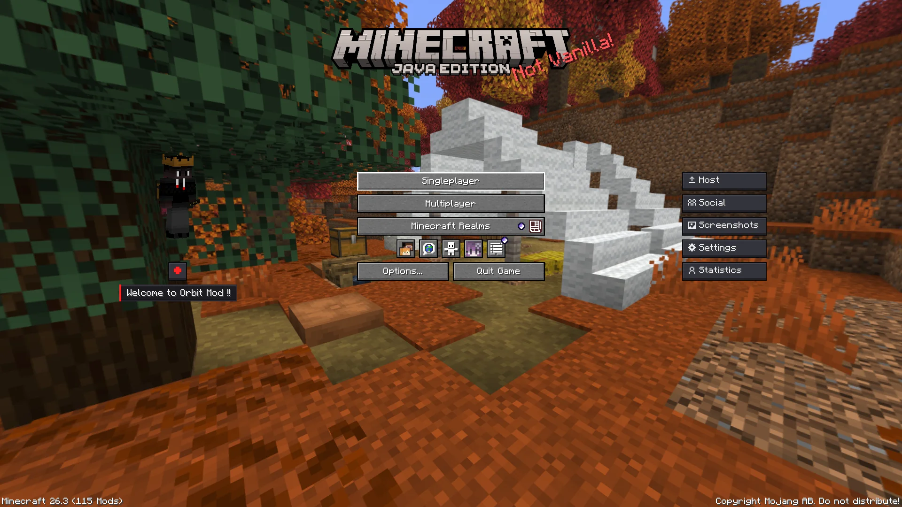
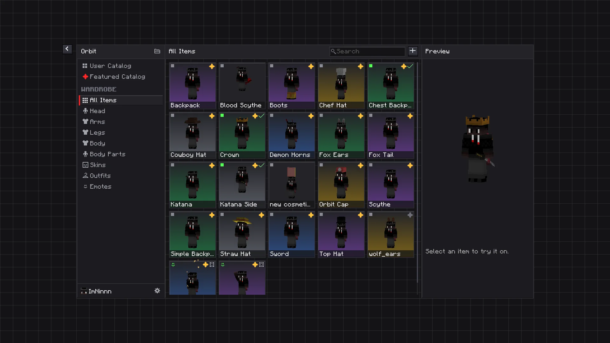
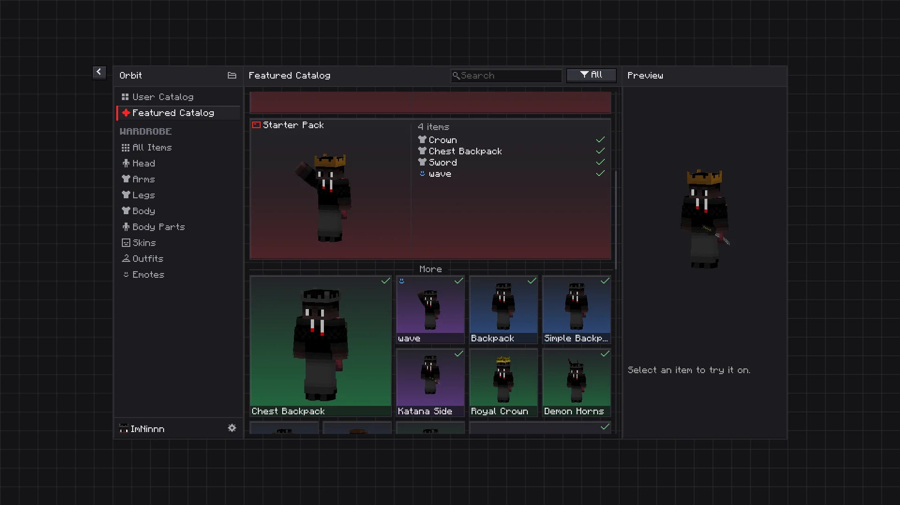
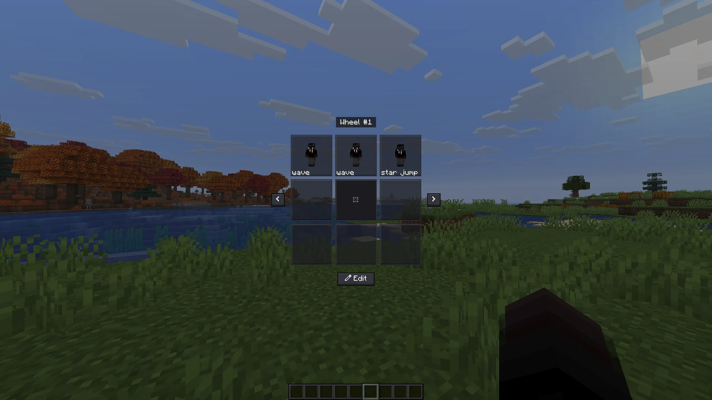
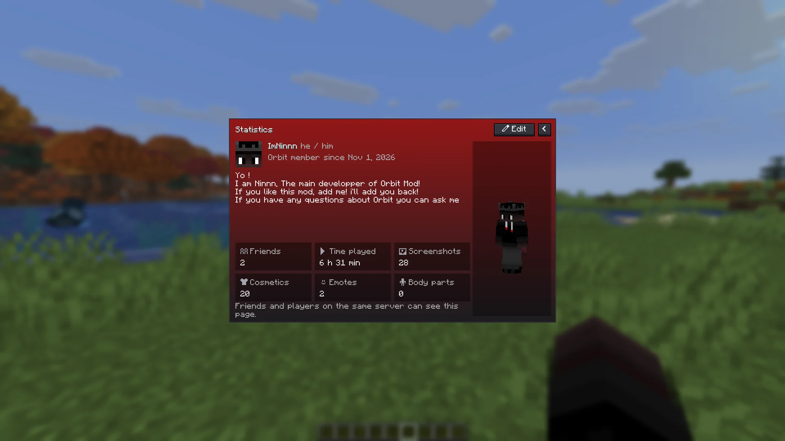
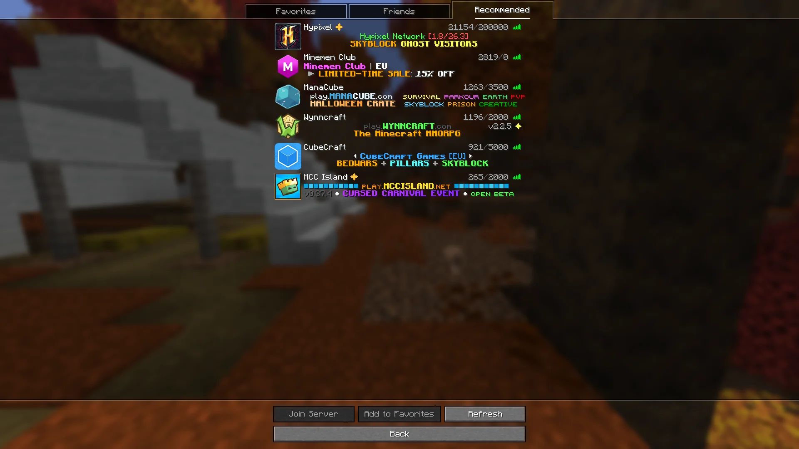

Minecraft Java 26.1 – 26.3 · Fabric
Your models.
On your player.
Orbit puts your own Blockbench models on your Minecraft player: hats, wings, backpacks, tails. They animate, react to how you move, and every Orbit player sees them, on any server. Emotes, friends and messages come with it.

What it does
Drop a .bbmodel file in a folder, pick it in the Orbit menu, and wear it.
Straight from Blockbench
Models as they are, with their animations, animated textures and physics. Nothing to convert.
Seen by everyone
Every Orbit player sees what you wear, on any server, through Orbit Cloud. The server needs nothing installed.
Emotes
Put your emotes on a wheel and play them with a key. Other players see them too.
Featured Catalog
Cosmetics and emotes picked by the Orbit team, free to claim. They follow your account to any computer.
Friends
Messages, screenshots and world invites, a profile page, and worlds your friends host.
Safe by design
Every file is checked before it is drawn, players can be reported, and messages can be end-to-end encrypted.

The Orbit menu
Press B, or click the Wardrobe button under your player on the title and pause screens. Everything shows in 3D on your own skin.

The Featured Catalog
Claim cosmetics and emotes made for Orbit, and wear them right away.

Emotes on a wheel
Hold R, point at an emote and let go. Several wheels, eight emotes each.

Your profile
Time played, your collection, a description and the outfit you want to show.

Find somewhere to play
The Multiplayer screen gets two more tabs: the worlds your friends host, and recommended servers.
Download
Pick the jar for your Minecraft version. Orbit 1.0.0, signed by the Orbit team; it updates itself when a new version comes out.
Questions
Do other players need the mod to see my cosmetics?
Yes. Cosmetics are drawn by Orbit, so only players who have it see them. Players without it play normally.
Does the server need anything installed?
No. Orbit works through Orbit Cloud, as long as you play with a real Minecraft account.
Does it work with Fresh Animations?
Yes. Cosmetics follow the model that is actually drawn, including Entity Model Features packs such as Fresh Animations.
Which Minecraft versions are supported?
Minecraft Java 26.1, 26.2 and 26.3 with Fabric Loader 0.20.1+ and Fabric API. Download the jar made for your version.